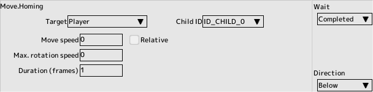

back to the original page
back to the original page
Script commands
Move group
X.Y.
Specify the destination in XY coordinates
Or
Specify the movement force in XY.
- Move to
- Specifies the target coordinates in absolute coordinates
Specifies the destination coordinates in absolute coordinates. The top-left corner of the screen is the (0,0) point
- Specifies the target coordinates relative to the current coordinates
The destination coordinates are relative to the current coordinates. If the number is positive, it is the bottom right corner. Positive numbers point to the lower right and negative numbers point to the upper left
- Specify the movement force in absolute value
Specify the movement force in the XY direction in absolute value
- Specify the force to move in the direction of
- XY
, which is a relative value.
- Movement formula
Valid only for coordinates.
- Current velocity
Current velocity to the target location
- Acceleration, rapid acceleration
Accelerate while moving from the start point
- Decelerate, decelerate rapidly
When you get close to the target point, you will move while decelerating
- Acceleration and deceleration, rapid acceleration and deceleration
- Number of frames to move
This is the number of frames it takes to reach the target coordinates, the shortest being 1 frame
- Range by random number
Range of coordinates or force to move to
- Use a variable
Use a variable to specify coordinates and force of movement
When you specify a target coordinate, the speed of movement will be maintained after reaching the target
Check "Stop when target is reached" to stop it.
Polar Coordinates
Change the direction and speed of movement.
- Change angle only once
Add the specified angle to the current direction of travel in the first frame only
- Modify angle per frame
Add the specified angle to the current direction of travel for all frames
- Number of frames
Continues to move for a specified number of frames
- Relative Angle
A relative angle to change
- Speed
When relative is checked, it is a relative speed, otherwise it is an absolute speed
- Do not make it less than 0
- When the speed is less than 0, set it to 0
- Varies the speed in %
from the current value by a percentage
When you reach the destination, your speed will be maintained
To stop, use the stop panel described below

Homing
Correct the direction to move towards the target
If target does not exist, complete immediately
- Target
Choose the character to be target
- Moving speed
When relative is checked, it is a relative speed, otherwise it is an absolute speed
While the speed panel is in operation, that speed has priority
- Maximum angular velocity
Angular velocity is the speed at which you can rotate
Angle is specified by multiplying the angle by 100 (if 50 is specified, the angle is adjusted up to 0.5 degrees per frame). is done
- Number of frames to be tracked
Specifies the number of frames to be tracked. After the specified number of frames, the camera will move straight ahead.
Scaling
Change the scale.
- Target scale
Equal scale with a factor of 100. 200 means 2, 50 means 0 .5 times. If you check the Relative setting, it will be multiplied by the current scale
- Time for the change
This is the number of frames it takes to complete the scale change
Rotate
Rotate towards the target.
- Target.
- Angle specification
Correct the direction to a specified angle
- Correct direction towards the player
player
- Correct the direction towards the parent
- when the parent is present
- Please specify the child
child ID
- Target angle
Target angle with absolute value or relative value for angle specification
- Time for the change
This is the number of frames it takes to complete the rotation change
- Align the force of movement to the direction of the direction of rotation
-
Speed
Correct the movement speed.
- Target speed
Relative is checked for relative speed, otherwise it is absolute speed
- Do not make it less than 0
- When the speed is less than 0, set it to 0
- Varies the speed in %
from the current value by a percentage
- Time required for the change
This is the number of frames to complete the speed change
Path
Execute the specified path. See Edit Path
Speed to move through the path
- Use the specified speed in the path
The specified speed will be enabled in the path edit
- Scripting control (ignore pauses)
Control panel "Pass speed" control
Stop
- Checkbox
Stops the selected move panel
- Movement force to 0
- Check if you want to stop the panel from moving, as it will remain in place even if the panel stops
Position conditions
Branching off according to the position of the target.
- Target
Specifying a target
- Child ID
Specifies when the target is a child
- Conditions
Select the positional relationship to the target
- Distance
Specifies when the condition is "less than or equal to" distance
Orbit
Move in a rotating motion around the target
However, it is not a perfect circle, and may draw a distorted circle due to target movement, etc.
- Target
Specifying a target
- Child ID
Specifies when the target is a child
- Distance
Distance to target
- Angle
Angle to the target
- Number of frames to reach
This is the number of frames it takes to complete the move to the specified position
- Control rotation
Control direction to match the rotation
Joint F.K.
Available only when multijoint is enabled and "Foward Kinematics" is specified as the control method
You can change the distance and angle by specifying a single node (joint)
In addition, it is possible to transmit the distance and angle to the sub-section in a damped manner
- Joint number
Articulated tab of the character edit, number in the list of joints
- Distance
Specifies the distance of the clause. Relative or absolute value
- Angle
Angle of the clause. Relative or absolute value
- Time required for the change
This is the number of frames to complete the y-change for a given distance angle
- Convergence coefficients for child clauses
The larger the number of child clauses, the longer it takes for the child to stop when the parent stops
- Transfer coefficients to the child nodes
- The larger the transfer coefficient to the child nodes, the stronger the influence of the parent
Path speed
Correct the path movement speed.
Available only when script control is selected in the "Path" control panel.
- Target speed
Relative is checked for relative speed, otherwise it is absolute speed
- Do not make it less than 0
- When the speed is less than 0, set it to 0
- Varies the speed in %
from the current value by a percentage
- Time required for the change
This is the number of frames to complete the speed change
Back to the top of the page